DUNAS, LAGOAS E ATINS
Lençóis Maranhenses
Lagoas, dunas, Atins e Barreirinhas em uma viagem para sentir a imensidão do Parque Nacional.
Quero saber mais →A EXPERIÊNCIA
Um cenário que não parece real.
Areia branca, lagoas cristalinas e o ritmo tranquilo de Atins e Barreirinhas. A Rud prepara uma experiência que combina os clássicos do parque e o tempo para viver cada paisagem.
Roteiro previsto
Barreirinhas, circuito de lagoas, Rio Preguiças, Atins e experiências de natureza. O roteiro final será divulgado com a saída confirmada.
O que pode estar incluso
- Hospedagem e deslocamentos definidos
- Passeios e guias locais
- Orientação antes e durante a viagem
O que será confirmado
- Data e duração da saída
- Serviços da proposta
- Seguro viagem opcional
A próxima saída está em preparação. A disponibilidade e os serviços serão confirmados antes da reserva.
Quero ser avisado sobre os Lençóis.
Quero receber novidades →FOTOS DO DESTINO
O cenário dos Lençóis

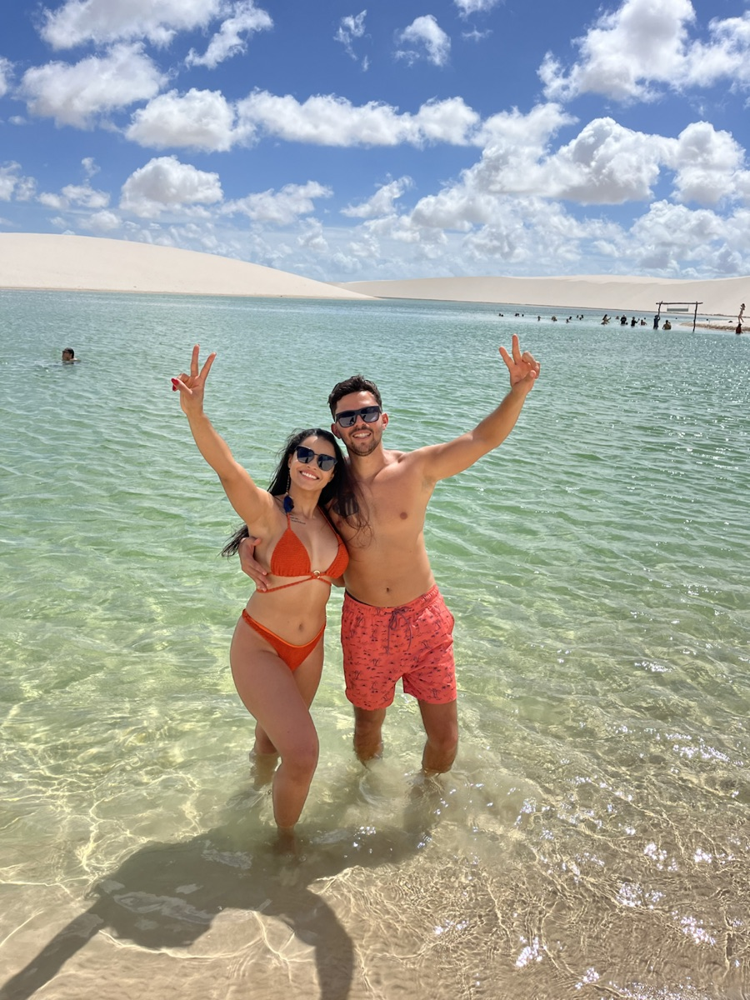
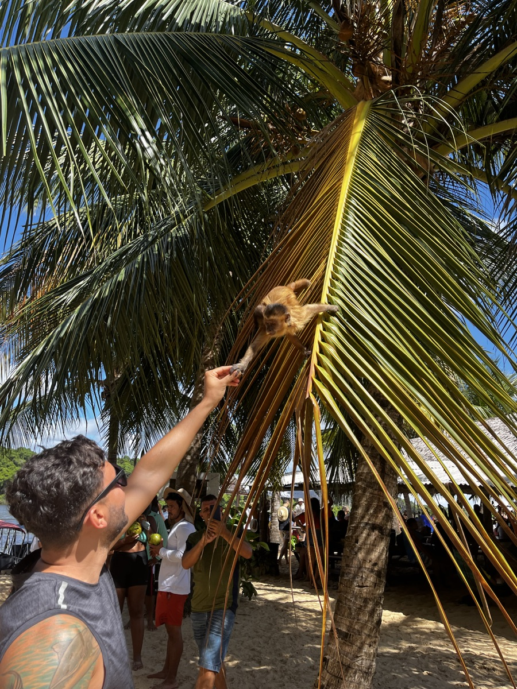
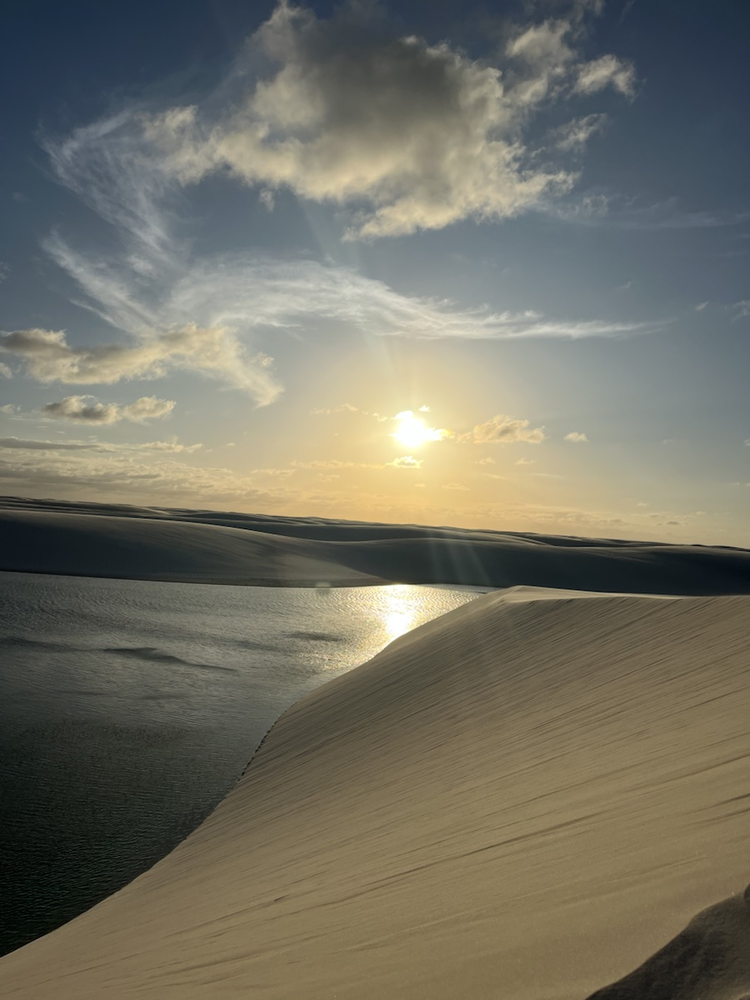
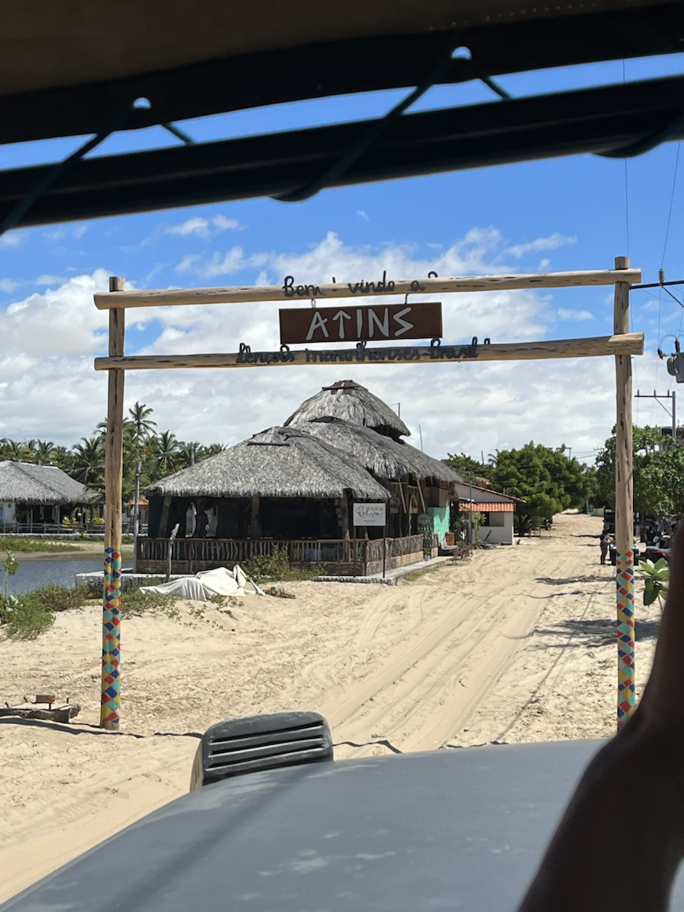
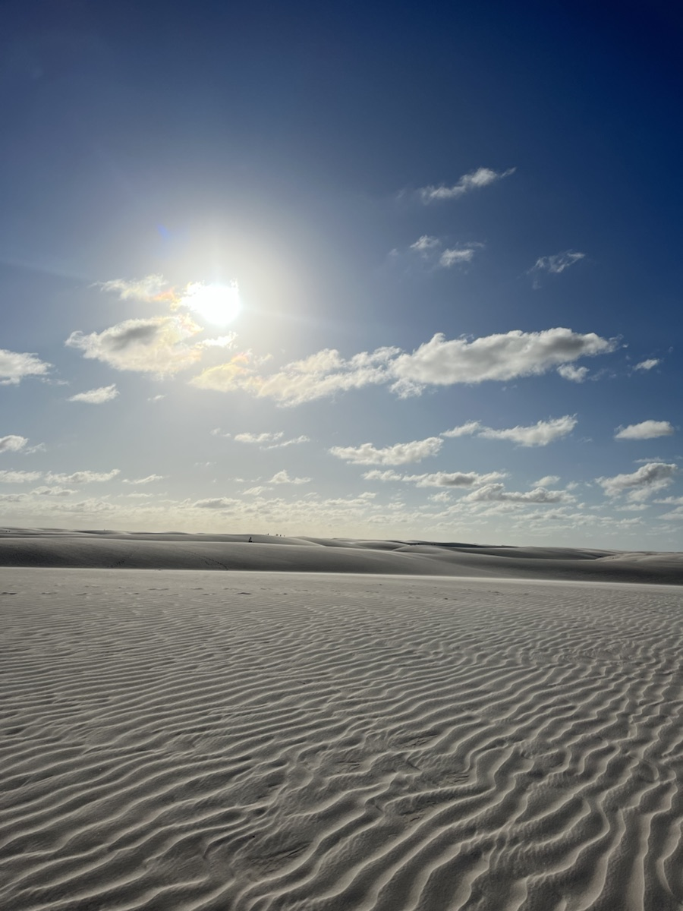
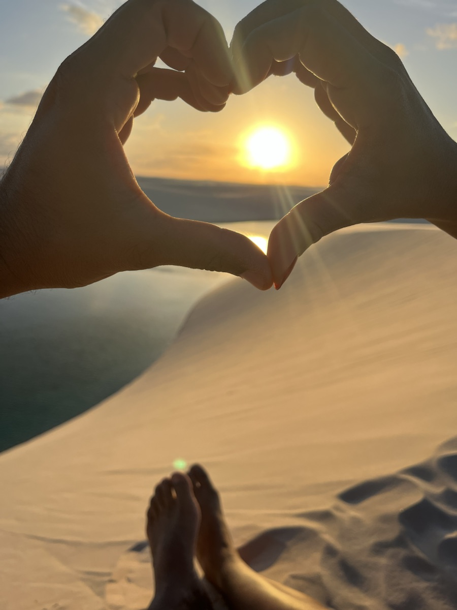
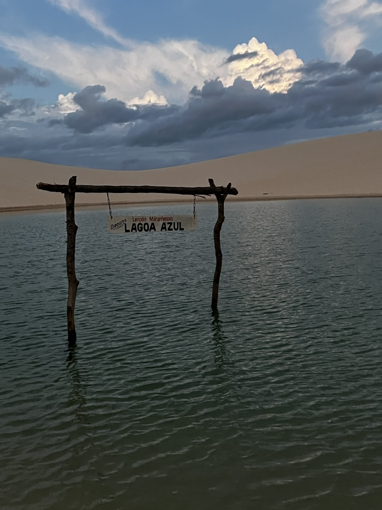
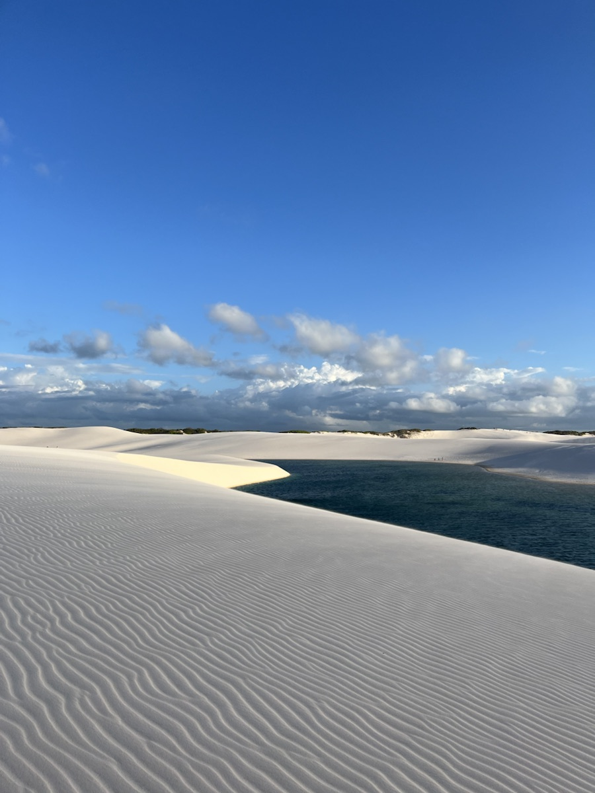
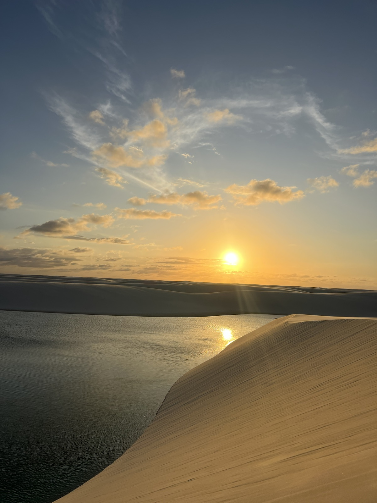
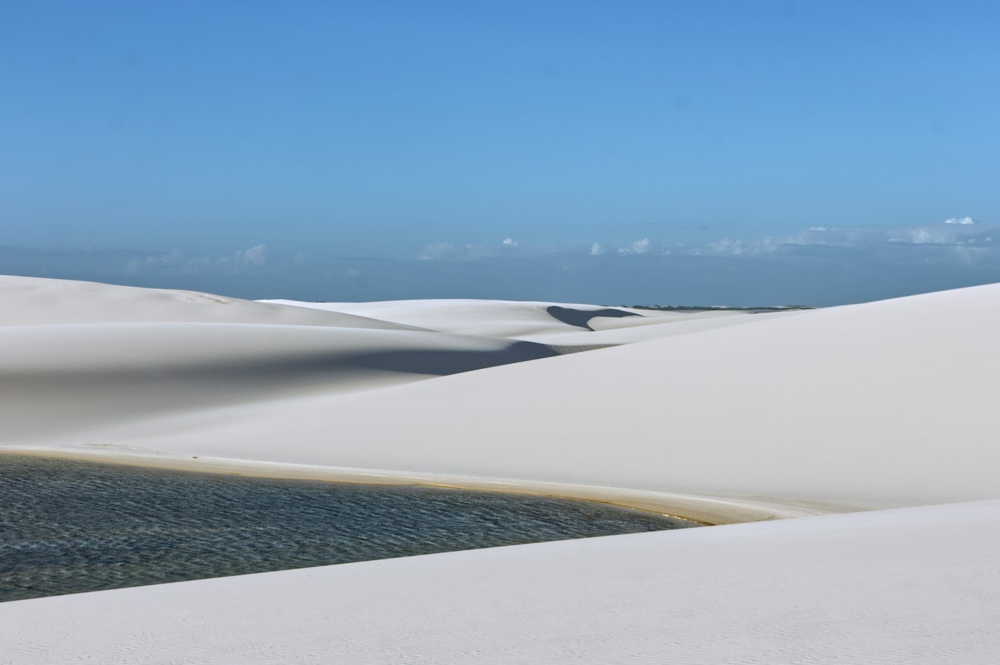
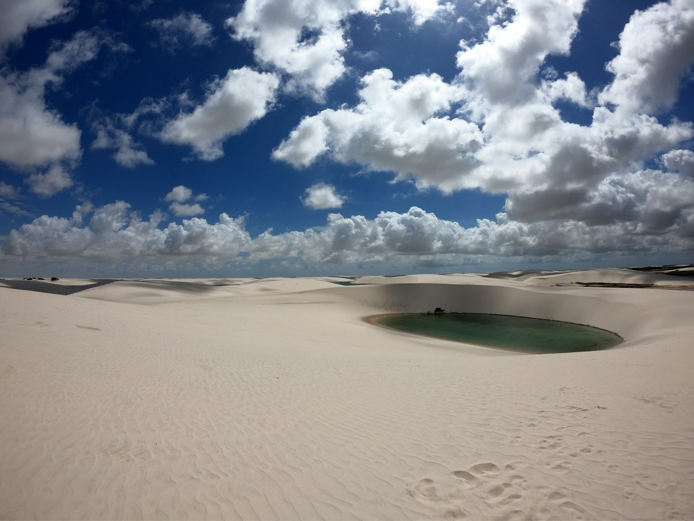